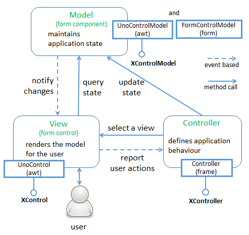
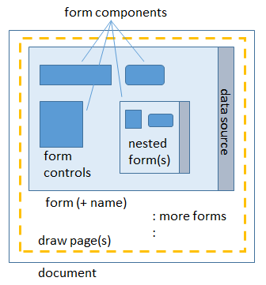
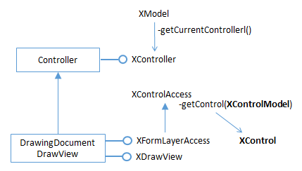
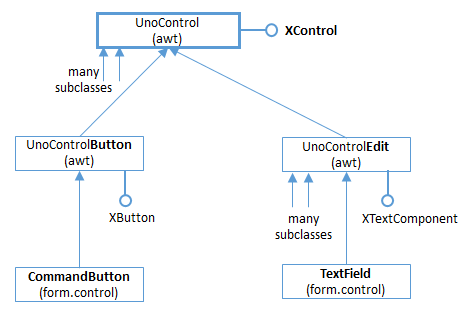
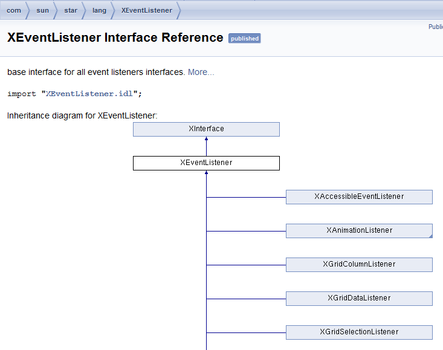
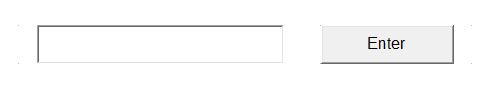

Chapter 39. Forms API Overview
Forms are usually found in Writer documents, or as data entry interfaces for Base, although they can also be employed in Draw, Impress, and Calc. Although Base forms are typically employed as front-ends to databases, the same capability is available in Writer and the other Office applications.
The LibreOffice "Getting Started Guide" (available at https://th.libreoffice.org/get- help/documentation/) describes the form features of Writer and Base in chapters 4 and
8. Longer examples can be found in the "Writer Guide" and "Base Handbook"
documents.
Chapter 15 of the "Writer Guide" explains how to create a form using the "Form Controls " and "Form Design" toolbars; it's essentially a matter of dragging check boxes, buttons, text fields, pull-down lists, and other controls, onto a form canvas.
Properties associated with a control, such as its name, text label, and position, are set by right clicking to access a properties dialog window.
An important use of Writer forms is to create editable PDF forms. This doesn't involve anything more than remembering to save the form-filled document as a PDF file when it's finished. There are several online tutorials that explain the details, such as "Create PDF Forms with OpenOffice" at http://foersom.com/org/HowTo/OoCreatePdfForm.html; although it's written for OpenOffice, it can be applied to LibreOffice without change.
Chapter 4 of the "Base Handbook" explains how to create a data input form for a library loans database, and much of the GUI interface of control toolbars, form canvas, and property dialogs is identical to that found in Writer. Even if you're only creating a text-based form, it's well worth reading the Base chapter because it goes into detail about the General, Data, and Events tab in the properties dialog.
A somewhat simpler example, which is purely text-based without data sources, can be found at http://openoffice.blogs.com/forms_fromscratch.pdf. I used this article (which is titled "Creating Forms from Scratch") to create the scratchExample.odt file used here.
1. Why Bother Programming Forms?
It's very easy to build a form using Office's "Form Controls " and "Form Design" toolbars. The GUI provides immediate feedback on how things will look by switching design mode on (where you're building the form) and off (to see how the form will look to a user).
Nevertheless, manipulating a form from code can be useful. This chapter starts with an overview of the forms API, and then looks at how data input into an existing form can be processed using listeners. This isn't the standard way of adding behavior to
Topics
An Overview of the Forms API; Examining a Text-based Form; Attaching Listeners to a View Example folders: "Forms Tests" and "Utils" forms; that capability is typically handled by macros coded in Office Basic (for example, see chapter 13 of "Getting Started with LibreOffice" and chapter 9 of the "Base Handbook"). I'll be looking at how to code form macros in Chapters 48 and 49.
The next chapter, Chapter 40, will look at how a form can be constructed at run time by programmatically adding controls to a new text document. The form is linked to a local database, and table and list box controls access its tables in different ways. In addition, a variety of listeners are attached to the controls.
2. An Overview of the Forms API
A key principle behind the forms API is the Model-View-Controller (MVC) pattern (e.g. see https://en.wikipedia.org/wiki/Model%E2%80%93view%E2%80%93controller) which divides each form control in two: a model (or component) representing the control's data, and a view for its GUI. Figure 1 shows the forms MVC model in detail.

Figure 1. The Form API's MVC Model.
The third part of MVC, the controller, links the model and view inside an application.
There might be multiple views attached to a model (i.e. different renderings of the same data), and the controller mediates between a view and the model when the user tries to change its state (for instance by typing data into a text field).
The thick-edged boxes next to the Model, View and Controller rounded rectangles in Figure 1 represent the main Office services and interfaces that implement the model, view and controller.
2.1. Control Confusion
The two uses of the word "control" in the API can be confusing. When the documentation refers to a control by name, such as a "button control" or "text field control", then it typically means the data and rendering parts taken as a whole. For example, "button control" includes the button's on-screen appearance and its state.
However, when the API only talks about a "control" then this usually means the services and interfaces related to its appearance. If the API refers to a control's "model" then it means its state.
Another problem with understanding the forms API is that its functionality is spread across several modules and submodules. The form module contains many services, interfaces, and seven submodules, which are listed in Table 1.
Form Submodule Purpose
binding collects functionality for binding form controls to
external data sources
component collects form control model descriptions
control collects form control descriptions
inspection collects services for inspecting form/components
runtime collects functionality needed during a form's runtime
submission collects functionality for submitting forms to external
data sinks
validation collects functionality to validate form components by
help of external validator instances
Table 1. Submodules of the Form Module.
To simplify matters, I'm only going to describe two of the submodules: form.component which holds the model-related services, and form.control for the view-related services.
But there's more modules to browse! Figure 2 shows the main services and interfaces used to define a button.

Figure 2. Form Services and Interfaces for a Button.
Four modules are mentioned in Figure 2, written in brackets inside the service rectangles. There's a CommandButton service in form.component and a second CommandButton in form.control. An examination of these services (and most other services in form.component and form.control) reveal them to be basically empty. The real 'action' is elsewhere, up in the form module's FormControlModel service, and over in Office's very large awt module, which implements its version of Java's AWT.
The names of the services start to become a little unclear at this point since the words "Control" and "Model" often appear together (e.g. in FormControlModel, UnoControlButtonModel, and UnoControlModel). My advice is to remember that "Model beats Control" . If a class name includes the word "Model", then it's probably for the model/data part of the control. If the name contains only "Control" then it's most likely for the rendering/appearance or listener part of the control.
For example, UnoControlButtonModel is where the button's data is defined, as a lengthy collection of properties. You can quickly view its documentation with lodoc UnoControlButtonModel. UnoControlButton is for the button's GUI (see lodoc UnoControlButton). Most of the functionality for a button is accessed through its XButton interface, which allows a listener to be attached to the button.
Every model (e.g. CommandButton in form.component) inherits the FormControlModel service in the form module. This links the control into the surrounding form.
2.2. More Information on the API
The principal documentation on the forms API is chapter 13 of the Developer's Guide
available as
https://wiki.openoffice.org/w/images/d/d9/DevelopersGuide_OOo3.1.0.pdf.
Alternatively, you can read the chapter online, starting at https://wiki.openoffice.org/wiki/Documentation/DevGuide/Forms/Forms (or use loGuide Forms). The guide's form examples are at http://api.libreoffice.org/examples/DevelopersGuide/examples.html#Forms.
3. Examining a Text-based Form
ExamineForm.java opens a text document containing a form, and attaches button and text field listeners to every button and text field control.
Figure 3 shows most of the important data structures used by a form.

Figure 3. The Form Data Structures.
A form is stored in a draw page associated with the document. A draw page can manage multiple forms, which can be accessed by index or by name (the default form is called "Form"). In some types of Office documents, it's possible to have multiple draw pages.
A form contains controls, such as buttons, text fields, and tables, and also nested forms. Collectively, controls and nested forms are known as form components, and are organized into a tree hierarchy in the draw page. At the lowest level, each basic form control is represented by a control shape, a specialized kind of DrawPage shape.
A data source, such as a database, may be attached to a form, which its controls can access using SQL queries.
Figure 4 gives a high-level view of how ExamineForm.java "digs down" into a document to access each control's model and view.

Figure 4. From Document to Control Model and View.
The words connected by the arrows correspond (in most cases) to services in the forms API; the names in blue are the interfaces associated with those services. The "Fig. X" rounded rectangles refer to figures later in this chapter which give more detail about how the API links from one service to the next.
Figure 4 starts with the document, and ends with references to a control's model and view services. For example, the services for a button are the CommandButton classes in the form.component and form.control modules.
Figure 4 has a branch point at the DrawPage service (it's labeled with the word "or") since there are two ways of using the API to get from a draw page to control models.
The branch on the left examines the control shapes in the DrawPage, while the branch on the right examines the form components.
I've decided not to explain the the left branch, although it's documented in my Forms.java utility class. The left branch corresponds to code in the Forms.getModels2() method.
Most of Figure 4 is implemented as static methods in the Forms class, which means that ExamineForm.java is fairly short:
// in ExamineForm.java
public static void main(String args[])
{
if (args.length != 1) {
System.out.println("Usage: run ExamineForm
ArrayList
models.size());
// examine each model
for(XControlModel model : models) {
System.out.println(" " + Forms.getName(model) + ": " +
Forms.getTypeStr(model));
// look at the control for each model
XControl ctrl = Forms.getControl(doc, model);
if (ctrl == null)
System.out.println(" No control found");
else { // attach listener if the control is
// a button or text field
if (Forms.isButton(model))
attachButtonListener(ctrl, model);
else if (Forms.isTextField(model))
attachTextFieldListeners(ctrl);
}
} System.out.println(); GUI.setVisible(doc, true); Lo.waitEnter();
Lo.closeDoc(doc); Lo.closeOffice(); } // end of main()
Forms.getModels() and Forms.getControl() will be used in most forms-based programs. Forms.getModels() returns a list of all the control models in the document.
In terms of Figure 4, it moves from the Document service at the top of the figure to ControlModel near the bottom. Forms.getControl() completes the descent by retrieving the control (view) associated with a given model.
If a control is a button or text field than attachButtonListener() or attachTextFieldListeners() are called. These methods are implemented in ExamineForm.java, but I'll delay explaining them until I've covered Forms.getModels() and Forms.getControl().
3.1. From Document to DrawPages
Every Office document supports the OfficeDocument service, and the XModel and XComponent interfaces. Using XComponent as a starting interface, it's possible to change the type to XDrawPagesSupplier (or XDrawPageSupplier), which gives access to the DrawPages (or single DrawPage) inside the document. The cast works because all Office documents support the GenericDrawingDocument service, as illustrated in

Figure 5.
Figure 5. Part of the GenericDrawingDocument Service Hierarchy
The code that implements the cast:
// in the Forms class public static XNameContainer getForms(XComponent doc) { XDrawPage drawPage = getDrawPage(doc); if (drawPage != null) return getForms(drawPage); else return null; } // end of getForms()
public static XDrawPage getDrawPage(XComponent doc)
// return the first draw page even if there are many
{
XDrawPageSupplier xSuppPage =
Lo.qi(XDrawPageSupplier.class, doc);
if (xSuppPage != null)
// this works if doc supports a single DrawPage
return xSuppPage.getDrawPage();
else {
// this means that the doc supports multiple DrawPages
XDrawPagesSupplier xSuppPages =
Lo.qi(XDrawPagesSupplier.class, doc);
XDrawPages xPages = xSuppPages.getDrawPages();
try {
System.out.println("Returning first draw page");
return Lo.qi(XDrawPage.class, xPages.getByIndex(0));
}
catch(Exception e) {
System.out.println(e);
return null;
}
} } // end of getDrawPage()
Forms.getDrawPage() only returns the first draw page in a document, even if many pages are available.
3.2. From DrawPage to Form
The XDrawPage interface can be cast to XFormsSupplier which makes the page's
forms accessible. This cast works because of the service hierarchy shown in Figure 6
which links the DrawPage service to GenericDrawPage.

Figure 6. Part of the DrawPage Service Hierarchy.
XFormsSupplier can supply forms as an indexed sequence (an XIndexContainer) or as an associative array using the form names as keys, returned by Forms.getForms():
// in the Forms class public static XNameContainer getForms(XDrawPage drawPage) // get all the forms in the page as a named container { XFormsSupplier formsSupp = Lo.qi(XFormsSupplier.class, drawPage); return formsSupp.getForms(); } // end of getForms()
The default form in a draw page is called "Form", and can be extracted by calling Forms.getForm(doc,"Form"):
// in the Forms class public static XForm getForm(XComponent doc, String formName) // get the form called formName { XNameContainer namedForms = getForms(doc); // see above XNameContainer con = getFormByName(formName, namedForms); return Lo.qi(XForm.class, con); }
public static XNameContainer getFormByName(String formName,
XNameContainer namedForms)
// get the form called formName
{ try {
return Lo.qi(XNameContainer.class,
namedForms.getByName(formName));
}
catch (Exception e) {
System.out.println("Could not find form " + formName + ": " + e);
return null;
}
} // end of getFormByName()
3.3. From Form to FormComponents
A form is a FormComponents instance, which holds FormComponent instances (i.e.
basic controls) and nested FormComponents (i.e. nested forms). Figure 7 shows a simplified service hierarchy for Form, FormComponents, and FormComponent.

Figure 7. Part of the Form Service Hierarchy.
Forms.getModels() collects all the FormComponent instances as a list by recursively searching from the top level form (or forms) through all the nested forms :
// in the Forms class
public static ArrayList
public static ArrayList
}
else if (servInfo.supportsService(
"com.sun.star.form.FormComponent")) {
XControlModel model = Lo.qi(XControlModel.class, servInfo);
models.add(model);
}
}
catch(Exception e)
{ System.out.println("Could not access " + nms[i]); }
}
return models;
} // end of getModels()
The first Forms.getModels() method extracts the top-level form (or forms) from the document as a named container, then passes it to the recursive getModels() which iterates through the container. If an element is a FormComponents instance then it's a nested form, and getModels() is called recursively to collect its controls. If the element is of type FormComponent then it's an ordinary control.
3.4. From FormComponent to Control Model
A FormComponent instance can be cast to XControlModel: XControlModel model = Lo.qi(XControlModel.class, servInfo); XControlModel first appeared at the top of Figure 2 on the left – it’s the interface inherited by all models.
The casting is possible because every control model service (e.g. CommandButton in the form.component module) inherits both FormComponent and UnoControlModel, as depicted by Figure 8.

Figure 8. Part of the Service Hierarchy for the CommandButton Model.
Every model has a hierarchy similar to CommandButton's in Figure 8. For example, the text field control model hierarchy appears in Figure 9.

Figure 9. Part of the Service Hierarchy for the TextField Model.
Figures 8 and 9 depict two important coding features. One is that it's possible to cast between a form component and a control model, as demonstrated by Forms.getModel() shown above. The other is that a model's data is stored in its properties, and most of those are NOT in the model's service (i.e. not in CommandButton and TextField). Most model properties are in superclasses (i.e.
UnoControlButtonModel in Figure 8 and UnoControlEditModel in Figure 9), which are located in the awt module.
3.5. Using a Control Model
Returning to ExamineForm.java, the relevant bit of code is:
// part of ExamineForm.java...
- ArrayList
models = Forms.getModels(doc); // see above - System.out.println("No. of control models in form: " +
- models.size());
- // examine each model
- for(XControlModel model : models) {
- System.out.println(" " + Forms.getName(model) + ": " +
- Forms.getTypeStr(model));
- }
An XControlModel reference can be utilized in various ways, but two of the main ones are examining its subclass service type and accessing its properties. As Figures 8 and 9 indicate, most of a control's properties are in the UnoControlXXXModel service, but may come from other services which can be hard to locate. For example, "Name" is from UnoControlDialogElement, a superclass of UnoControlModel (which I didn't include in Figures 8 and 9). "ClassId" comes from FormControlModel, which is on the "forms branch" of the service hierarchies in the figures.
The easiest thing is to print all the model's properties, by calling Props.showObjProps(): Props.showObjProps("Model", model); Info.showInterfaces() and Info.showServices() are similarly useful, listing all the interfaces and services for a model:
Info.showInterfaces("Model", model); Info.showServices("Model", model);
The Forms.getName() and Forms.getTypeStr() methods called in the code fragment above are defined as:
// in the Forms class public static String getName(XControlModel cModel) // returns the name of the given form component { return (String) Props.getProperty(cModel, "Name"); }
public static String getTypeStr(XControlModel cModel) { int id = getID(cModel); if (id == -1) return null;
XServiceInfo servInfo = Lo.qi(XServiceInfo.class, cModel);
switch (id) {
case FormComponentType.COMMANDBUTTON:
return "Command button";
case FormComponentType.RADIOBUTTON:
return "Radio button";
case FormComponentType.IMAGEBUTTON:
return "Image button";
case FormComponentType.CHECKBOX:
return "Check Box";
case FormComponentType.LISTBOX:
return "List Box";
case FormComponentType.COMBOBOX:
return "Combo Box";
case FormComponentType.GROUPBOX:
return "Group Box";
case FormComponentType.FIXEDTEXT:
return "Fixed Text";
case FormComponentType.GRIDCONTROL:
return "Grid Control";
case FormComponentType.FILECONTROL:
return "File Control";
case FormComponentType.HIDDENCONTROL:
return "Hidden Control";
case FormComponentType.IMAGECONTROL:
return "Image Control";
case FormComponentType.DATEFIELD:
return "Date Field";
case FormComponentType.TIMEFIELD:
return "Time Field";
case FormComponentType.NUMERICFIELD:
return "Numeric Field";
case FormComponentType.CURRENCYFIELD:
return "Currency Field";
case FormComponentType.PATTERNFIELD:
return "Pattern Field";
case FormComponentType.TEXTFIELD:
// two services with this class id:
// text field and formatted field
if ((servInfo != null) && servInfo.supportsService(
"com.sun.star.form.component.FormattedField"))
return "Formatted Field";
else
return "Text Field";
default:
System.out.println("Unknown class ID: " + id);
return null;
}
} // end of getTypeStr()
public static int getID(XControlModel cModel)
{
// get the ClassId property
Short classId = (Short) Props.getProperty(cModel, "ClassId");
if (classId == null) {
System.out.println("No class ID found for form component");
return -1;
}
return classId.intValue();
} // end of getID()
Forms.getID returns the "ClassId" integer, which is checked by getTypeStr() against values in the FormComponentType enumeration, and mapped to more informative strings.
Forms.getID() is utilized in a similar manner in a series of boolean isXXX() methods, such as isButton() and isTextField():
// in the Forms class
public static boolean isButton(XControlModel cModel)
{
int id = getID(cModel);
if (id == -1)
return false;
else
return ((id == FormComponentType.COMMANDBUTTON) ||
(id == FormComponentType.IMAGEBUTTON));
} // end of isButton()
public static boolean isTextField(XControlModel cModel)
{
int id = getID(cModel);
if (id == -1)
return false;
else
return ((id == FormComponentType.DATEFIELD) ||
(id == FormComponentType.TIMEFIELD) ||
(id == FormComponentType.NUMERICFIELD) ||
(id == FormComponentType.CURRENCYFIELD) ||
(id == FormComponentType.PATTERNFIELD) ||
(id == FormComponentType.TEXTFIELD));
} // end of isTextField()
3.6. From Control Model to View
Having obtained a form's model, it's view becomes accessible, but following the MVC pattern, this requires the use of Office's controller (see Figure 1). One way to reach the controller is through a document reference (XComponent) and XModel.getCurrentController(). The resulting XController interface can be cast to XControlAccess, due to the service hierarchy shown in Figure 10.

Figure 10. Part of the DrawingDocumentDrawView Service Hierarchy.
These steps are implemented by GUI.getControlAccess():
// in the GUI class public static XControlAccess getControlAccess(XComponent doc) { return Lo.qi(XControlAccess.class, getCurrentController(doc)); }
public static XController getCurrentController(XComponent doc)
{
XModel model = Lo.qi(XModel.class, doc);
if (model == null) {
System.out.println("Document has no data model");
return null;
}
return model.getCurrentController();
}
Forms.getControl() employs XControlAccess.getControl() to return the model's view when supplied with a model:
// in the Forms class
public static XControl getControl(XComponent doc,
XControlModel cModel)
{ XControlAccess controlAccess = GUI.getControlAccess(doc);
// see above
if (controlAccess == null) {
System.out.println("Could not obtain controls access");
return null;
}
try {
return controlAccess.getControl(cModel);
}
catch (Exception e) {
System.out.println("Could not access control: " + e);
return null;
}
} // end of getControl()
4. Attaching Listeners to a View
XControl is an interface of the UnoControl service, which represents an abstract control. This class must be cast to a service for a real control, such as UnoControlButton or UnoControlEdit in order to call listener methods in XButton or XTextComponent. This hierarchy is illustrated by Figure 11.

Figure 11. Part of the Service Hierarchy Below UnoControl.
Back in ExamineForm.java, every button or text field has listeners attached to it:
// part of ExamineForms.java...
:
// look at the control for each model
XControl ctrl = Forms.getControl(doc, model);
if (ctrl == null)
System.out.println(" No control found");
else { // attach listener if the control is a button or text field
if (Forms.isButton(model))
attachButtonListener(ctrl, model);
else if (Forms.isTextField(model))
attachTextFieldListeners(ctrl);
}
:
attachButtonListener() and attachTextFieldListener() implement the casting shown in Figure 11, starting with an XControl interface. For instance, attachButtonListener() connects an anonymous XActionListener object to a button, and sets its action command to be the button's label:
// in ExamineForms.java
private static void attachButtonListener(XControl ctrl,
XControlModel cModel)
{ XButton xButton = Lo.qi(XButton.class, ctrl);
// XControlModel cModel = ctrl.getModel();
xButton.setActionCommand( Forms.getLabel(cModel));
xButton.addActionListener( new XActionListener() { public void disposing(com.sun.star.lang.EventObject ev) {}
public void actionPerformed(ActionEvent ev)
{ System.out.println("Pressed \"" + ev.ActionCommand + "\""); }
}); } // end of attachButtonListener()
Although XActionListener and Java's ActionListener are similar, they're not the same.
For one thing, its necessary to define two methods in XActionListener, actionPerformed() and disposing().
Office supports over 120 kinds of listeners! The best place to browse through them is on the documentation webpage for their common superclass, XEventListener. lodoc XEventListener should take you to XEventListener in the document module, but you want its superclass, XEventListener in the lang module. The first part of its long webpage is shown in Figure 12.

Figure 12. The First Part of the XEventListener Documentation Page
in the lang Module.
Although the clickable images on the LibreOffice webpages make moving around the service and interface hierarchies very easy, they're not searchable. When the hierarchy is very large (as for XEventListener), and not sorted in alphabetical order, it can be time-consuming to find a particular subclass.
I solved the problem by creating a text file, called XEventListenerSubclasses.txt, which lists the subclasses of XEventListener in order, and is searchable of course.
You can find it in the Forms Tests/ folder for this chapter.
Alternatively, almost all the listeners for controls are defined in the awt module, so you can search that module's documentation page (accessible using lodoc awt module).
attachTextFieldListeners() attaches two listeners to a text field control because
XTextListener isn't triggered when the user types
// in ExamineForms.java
private static void attachTextFieldListeners(XControl ctrl)
// listen for text changes and focus changes in the control
{
XTextComponent tc = Lo.qi(XTextComponent.class, ctrl);
tc.addTextListener( new XTextListener() {
public void textChanged(TextEvent ev)
{
XControlModel cModel = Forms.getEventControlModel(ev);
System.out.println( Forms.getName(cModel) +
" text: " + Props.getProperty(cModel, "Text"));
} // end of textChanged()
public void disposing(EventObject ev) {}
});
XWindow tfWindow = Lo.qi(XWindow.class, ctrl); tfWindow.addFocusListener( new XFocusListener() {
public void focusLost(FocusEvent ev)
{ XControlModel model = Forms.getEventControlModel(ev);
System.out.println("Leaving text: " +
Props.getProperty(model, "Text"));
}
public void disposing(EventObject ev) {} // unused
public void focusGained(FocusEvent ev) {}
});
} // end of attachTextFieldListeners()
Obtaining the Model attachButtonListener() and attachTextFieldListeners() demonstrate two ways of obtaining the control's model when an event triggers a view listener.
In attachButtonListener(), an XControl reference is available, which means that XControl.getModel() could be called: XControlModel cModel = ctrl.getModel(); In fact that coding isn't used, since the model reference is available already.
attachTextFieldListeners() shows another approach, which is to examine the event object that arrives at the listener's method (e.g. the FocusEvent object received by focusLost()). Forms.getEventControlModel() is defined as:
// in the Forms class public static XControlModel getEventControlModel(EventObject ev) { XControl xControl = Lo.qi(XControl.class, ev.Source); return xControl.getModel(); } // end of getEventControlModel()
5. Using ExamineForm.java
ExamineForm.java can be called with any form-based ODT file. The simplest one in the examples is form1.odt, which consists of only a text field and a button, as shown in Figure 13.

Figure 13. The form1.odt Form.
When the user types "abc" and
Text Box 1 text: a Text Box 1 text: ab Text Box 1 text: abc Leaving text: abc Leaving text: abc Pressed "Enter" Pressed "Enter"
The focus lost event is reported twice because of the